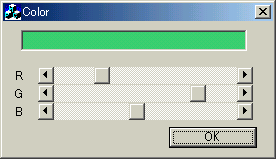

| 1. ダイアログリソースの編集から始めましょう |
|
コントロール
|
ID
|
|
スクロールバー(一番上：赤色)
|
ID_SCR_R
|
|
スクロールバー(真ん中：緑色)
|
ID_SCR_G
|
|
スクロールバー(一番下：青色)
|
ID_SCR_B
|
|
エディットボックス
|
ID_EDIT
|
ではスクロールバーについて少し説明していきましょう。スクロールバーとは、データをある範囲内で自由に変更するためのコントロールです。ここでいうある範囲というのもプログラマー側で指定します。例えば0〜100までの範囲を指定したら、バーの左に行くと0で右側の右に行くと100に近づくように設定されます。したがって、まずスクロールバーがどの範囲の値を動くのかを指定する必要があります。
そのほか重要な点は、スクロールバーのバーが動かされるときには、ウィンドウズからアプリの方にメッセージがやってきます。このメッセージを捕まえてなんらかの処理をすればいいわけですね。またスクロールバーには水平と垂直の二種類があって、スクロールバーとしては同じものなのですが、ウィンドウズから送られてくるメッセージは異なります。今回は水平に動かすスクロールバーになります。と・・・まぁ難しい話は置いておいてどんどん先にすすんでしまいましょう。
| 2. ダイアログメンバを追加と初期化 |
ここではヘッダファイルに色をつけるためのハケに相当するCBrushクラス変数とDWORD(非負整数型)の変数を追加します。DWORD型の変数は、RGBのそれぞれの値を保持するものです。RGB値は、それぞれの色の成分が0〜255の非負整数で表現されるためにintではなくDWORDにしておきました。別にunsigned intでもいいと思いますが、色変数であるCOLORREF構造体は(今回は使いませんが)、各成分の色をDWORD型で保持しているので、私もDWORD型の方で行こうと思います。ではヘッダファイルColorDlg.hを開いて以下のように編集してみましょう。
/////////////////////////////////////////////////////////////////////////////
// CColorDlg ダイアログ
class CColorDlg : public CDialog
{
// 構築
public:
CBrush* pBrush; // 背景色ブラシ(ここを追加)
DWORD dwColor[3]; // RGB値(ここを追加)
CColorDlg(CWnd* pParent = NULL); // 標準のコンストラクタ
DWORD型の変数が三つの配列になっていますが、1番目がRの成分、2番目がGの成分、3番目がBの成分が入ります。ここまでは本当に簡単ですね。ここでコンストラクタ（ColorDlg.cpp）で変数の初期化をしておきます。
CColorDlg::CColorDlg(CWnd* pParent /*=NULL*/)
: CDialog(CColorDlg::IDD, pParent)
{
//{{AFX_DATA_INIT(CColorDlg)
//}}AFX_DATA_INIT
// メモ: LoadIcon は Win32 の DestroyIcon のサブシーケンスを要求しません。
m_hIcon = AfxGetApp()->LoadIcon(IDR_MAINFRAME);
// 初期背景色(白)
dwColor[0] = 255;
dwColor[1] = 255;
dwColor[2] = 255;
// ブラシのポインタ(NULL)
pBrush = NULL;
}
ここでは色を白:RGB(255,255,255)にしておき、ブラシのポインタをNULLに設定しておきます。
| 3. WM_HSCROLLメッセージの処理を行おう |
BEGIN_MESSAGE_MAP(CColorDlg, CDialog)
//{{AFX_MSG_MAP(CColorDlg)
ON_WM_SYSCOMMAND()
ON_WM_PAINT()
ON_WM_QUERYDRAGICON()
//}}AFX_MSG_MAP
END_MESSAGE_MAP()
これがメッセージマップの正体です。例えばWM_PAINTというメッセージがWindowsから送られてきた時には、メッセージを捕まえそのメッセージに対応した関数が実行されるようになっています。とはいいつつ、Windowsからのメッセージを対応する関数なんてわかりませんよね。そこでclasswizardでメッセージマップを行います。
BOOL CColorDlg::OnInitDialog()
{
(中略)
// TODO: 特別な初期化を行う時はこの場所に追加してください。
// スクロールバーのポインタ取得
CScrollBar* pRed = (CScrollBar*)GetDlgItem(IDC_SCR_R);
CScrollBar* pGreen = (CScrollBar*)GetDlgItem(IDC_SCR_B);
CScrollBar* pBlue = (CScrollBar*)GetDlgItem(IDC_SCR_G);
// スクロールバーのレンジ設定
pRed->SetScrollRange(0,255);
pGreen->SetScrollRange(0,255);
pBlue->SetScrollRange(0,255);
// スクロールバーの初期位置設定
pRed->SetScrollPos(dwColor[0]);
pGreen->SetScrollPos(dwColor[1]);
pBlue->SetScrollPos(dwColor[2]);
(中略)
}
|
void CColorDlg::OnHScroll(UINT nSBCode, UINT nPos, CScrollBar* pScrollBar)
{
// スクロール位置を取得
int nNewpos = pScrollBar->GetScrollPos();
switch(nSBCode){
case SB_LINEDOWN: // 右側ボタンを押された
nNewpos++; break;
case SB_LINEUP: // 左側ボタンを押された
nNewpos--; break;
case SB_PAGEDOWN: // スクロールバーの右側が押された
nNewpos+=16; break;
case SB_PAGEUP: // スクロールバーの左側が押された
nNewpos-=16; break;
case SB_THUMBTRACK: // マウスでつかんで動かした
nNewpos = nPos; break;
default:
return;
}
// 最大・最少チェック
if( nNewpos < 0) nNewpos = 0;
else if( nNewpos > 255) nNewpos = 255;
else ;
// 現在位置にスクロールバー更新
pScrollBar->SetScrollPos(nNewpos);
CScrollBar* pRed = (CScrollBar*)GetDlgItem(IDC_SCR_R);
CScrollBar* pGreen = (CScrollBar*)GetDlgItem(IDC_SCR_G);
CScrollBar* pBlue = (CScrollBar*)GetDlgItem(IDC_SCR_B);
dwColor[0] = (DWORD)(pRed->GetScrollPos());
dwColor[1] = (DWORD)(pGreen->GetScrollPos());
dwColor[2] = (DWORD)(pBlue->GetScrollPos());
Invalidate(true);
}
|
| 4. WM_CTLCOLORメッセージの処理を行おう |
最後は、エディットボックスの背景色変更です。これは前にも紹介したとおり、WM_CTLCOLORメッセージが深く関わっているんでしたよね。まずメッセージマッピングを行っていきます。メッセージマッピングの方法は、先ほどのWM_HSCROLLでも紹介しましたが、まったく同じ操作でできます。
WM_CTLCOLORとWM_DESTROYのメッセージをマッピングしてください。マッピングできましたか？突然出てきたWM_DESTROYですが、これはダイアログが破棄されたときに送られるメッセージです。ダイアログが破棄＝アプリの終了ですから、このWM_DESTROYで定義されたOnDestroy関数では、プログラムの後処理(お掃除)を行うのが適当ですが、これは以下のコードを見てもらえれば即分かりでしょう(笑)。では、マッピングによって追加された関数OnCtｌColorとOnDestroyを以下のように編集してください。
HBRUSH CColorDlg::OnCtlColor(CDC* pDC, CWnd* pWnd, UINT nCtlColor)
{
HBRUSH hbr = CDialog::OnCtlColor(pDC, pWnd, nCtlColor);
switch(nCtlColor){
/////////// エディットボックスorメッセージボックスの場合////////////
case CTLCOLOR_EDIT:
case CTLCOLOR_MSGBOX:
// ブラシのポインタがNULLでない時メモリを解放
if(pBrush != NULL){
delete pBrush;
pBrush = NULL;
}
// 現在の色のブラシを作成
pBrush = new CBrush(RGB(dwColor[0],dwColor[1],dwColor[2]));
// ブラシのハンドルを返す
return (HBRUSH)(pBrush->GetSafeHandle());
/////////// そのほかのコントロールは何もしない/////////////////////
default:
break;
}
return hbr;
}
void CColorDlg::OnDestroy()
{
// メモリを解放
delete pBrush;
}
|
このOnCtlColor関数は、全てのコントロールの色を自由に変更することができます。 nCtlColorがどのコントロールの種類かを表しています。今はエディットコントロールの背景色を変えたいので、
CTLCOLOR_EDIT の場合だけをピックアップすればよいのですね。ここで現在の色を使ってブラシを作成します。 このブラシのハンドルをリターンすれば背景色を変更することができます。たったこれだけで背景色が変更できます。
上のコードではちょっと複雑なことをしているのですが、ブラシを作るときにnew演算子を使っているため、メモリをしっかり解放する作業を行わなければヤバイことになるのは分かりますか？つまりスクロールバーをぐりぐりっと動かすと、その分だけInvalidate関数が呼ばれるために、当然OnCtlColorが何回も呼ばれます。したがってnewでブラシを作成する前に、以前作成したブラシのポインタを確認して、メモリを動的確保していたらメモリを解放してあげなければリソースは一瞬でなくなり、即ハングアップ！です。まぁこの方法はあんまりよろしくない方法ですが、直感的でわかりやすい方法だと思います。
最後にOnDestroyでもメモリを解放しているのは、念のためでもあります。
これで、背景色をリアルタイムに変更できるでしょう。
言い忘れていましたが、垂直スクロールバーも全く同じ方法で実装できます。ただメッセージはWM_VSCROLLですから注意してくださいね。
本コーナーのソースファイルは載せませんが、ダウンロードのコーナーに似たようなソフト＋ソースがあるのでそれを参考にしていただけたら幸いです！